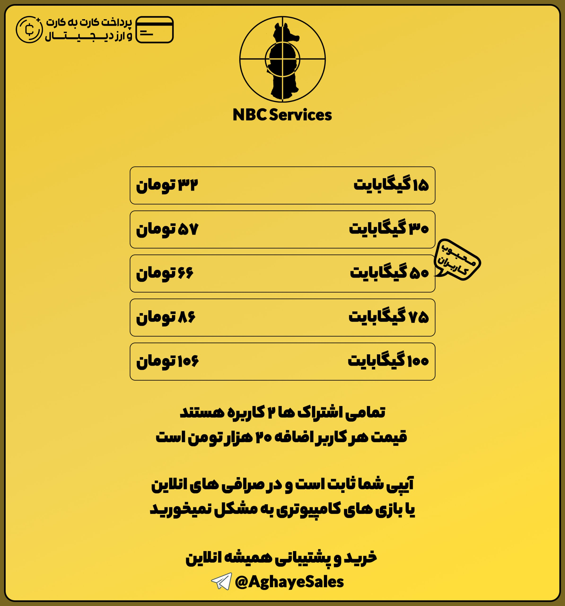

تیم ما همیشه در تلاش است که امن ترین وی پی ان رو با منصفانه ترین قیمت در اختیار هموطنان بکذارد
شما قبل از خرید از ما میتونید سرویس را تست کنید و از کارکرد آن اطمینان کافی داشته باشید
با لینک زیر هم وضعیت سرویس های مارو در 90 روز گذشته میتونید ببینید
تیم ما از پروتوکل Vless + tls + gRPC استفاده میکند که علاوه بر امنیت
بالا بهترین سرعت رو هم خواهد داشت.
همچنین از هیچ سرور یا cdn ایرانی استفاده نشده و هیچگونه اطلاعاتی از
شما داخل سایت ها و برنامه های ایرانی نشان داده نمیشود.
وی پی ان ما یک no-log VPN هست و ما دسترسی به هیچ داده ای از شما نخواهیم داشت حتی سایت هایی که از آن ها بازدید کرده اید و فقط حجم مصرفی شما برای ما قابل مشاهده است.

Personal